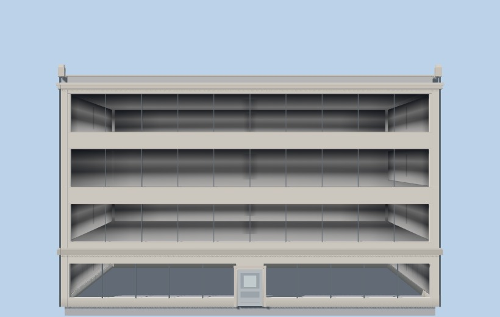
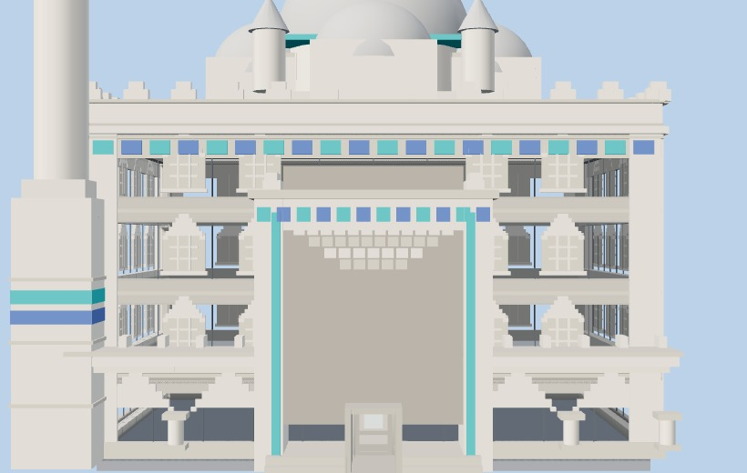
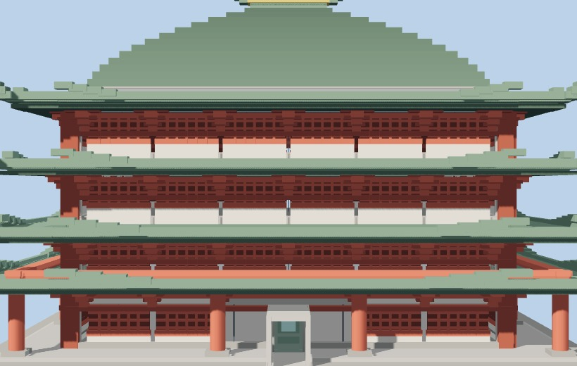
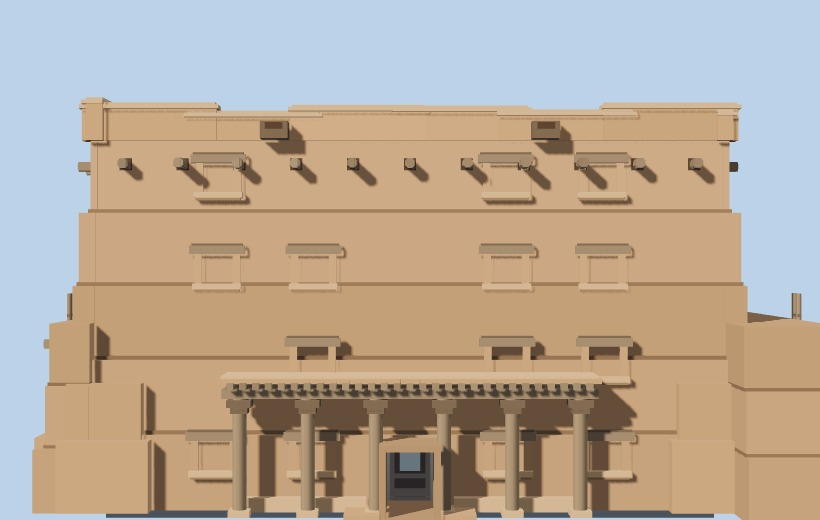
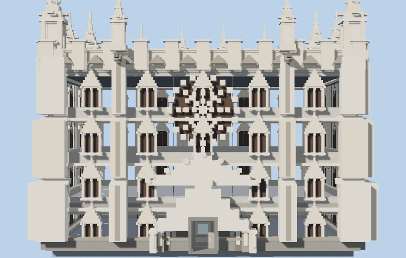
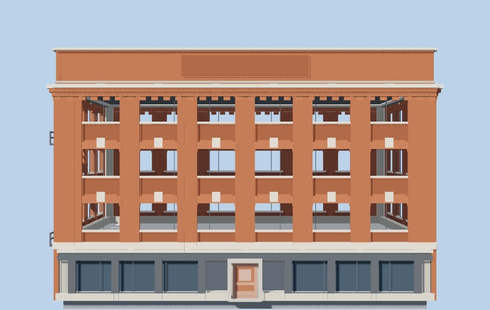
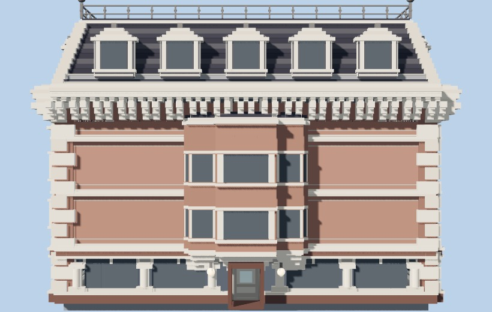

Seven dead-on elevations, same tripod, same scale, ground hidden. The red rules are not drawn per building — they are the shell's constants, ruled at the same heights across all seven. Every culture's floors land on them, because the shell is built before the facade runs and the facade is only allowed to decorate it.

0 m3.26.49.6roof 12.8
0 m3.26.49.6roof 12.8
0 m3.26.49.6roof 12.8
0 m3.26.49.6roof 12.8
0 m3.26.49.6roof 12.8
0 m3.26.49.6roof 12.8
0 m3.26.49.6roof 12.8FH = 3.2 m — floor-to-floor, a module constant in buildings.js:100. Not a per-building value, not something a facade can set. A machiya has 2.4 m floors, a temple has bays instead of storeys, and a prayer hall has neither.
sill 0.55 · header 0.45 · bay 1.5 m — buildings.js:4164. The same glazing band on every storey of all four faces (the pink band above). The only thing that varies is modern = storeys >= 3 — it varies on height, not on what the building is.
One rectangular prism, w × d. There is no courtyard, no compound, no wall, no gate — and a villa, a riad and a siheyuan are all the void in the middle, not the wall around it.
One palette per district. Culture reads as colour at 100 m before it reads as ornament at 10 m.
Rules are exact on the front wall plane (22° lens at 46 m, near-orthographic); ornament standing proud of that plane projects a shade large. Generated by tools/facade-catalog.mjs --sameness.